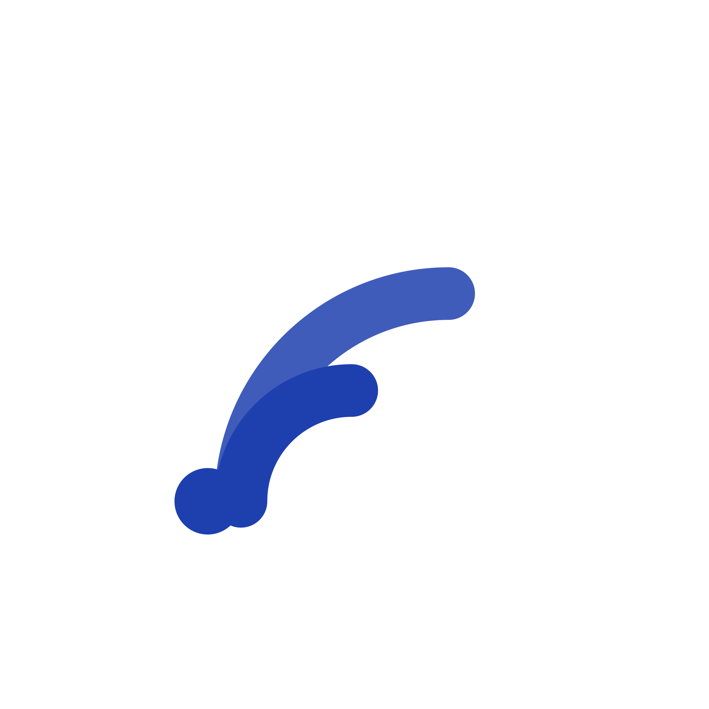

参照「圆角白底 + 单一大面积纯色抽象几何图形」的极简 App Icon 语言，为音乐播放器梳理 5 个方向。每个方向均包含应用图标、Logo 组合与命名逻辑，强调留白、克制与国际辨识度。

HALO = 光环 / 环绕声场。中文「听回」取「听见、回响」之意，暗示沉浸式听感与音乐的余韵。
英文无衬线加粗字标 + 中文副标，左侧嵌入缩放后的迷你图标，整体对称、冷静。
由弧线「波前」从声源向外扩散，圆心为发声点，两道同心弧以不同透明度表达声波的层次衰减。
主色 #1E40AF（深蓝），圆角白底，单一几何语言。
沉静、科技、有距离感的精致。适合强调「高保真 / 空间音频」定位的产品。
MOTIF = 音乐动机 / 主题。中文「律动」直指节奏与 groove，强调播放器带来的律动感。
同 HALO 版式体系，字标 + 副标 + 迷你图标，保持系列一致性。
底部实心圆为鼓点，上方一条弹性曲线向上挑起并收于圆点，像一段被弹起的旋律线。
主色 #1D4ED8（亮蓝），曲线 stroke 与圆点同色，纯几何。
年轻、有弹性、偏潮流。适合主打「每日推荐 / 节奏歌单」的轻松场景。
BEAM = 光束。中文「光弦」将光与弦并置，暗示声音如光般被精确传导。
延续系列字标版式；图标中斜置的粗线段在视觉上最具方向张力。
一条自左下向右上的粗对角光束，末端收于一圆点，像被发射的声波 / 光信号。
主色 #2563EB（标准蓝），单笔斜线 + 端点，极简有力。
锐利、向前、有速度感。适合强调「秒播 / 低延迟 / 高解析」的技术卖点。
ONDA = 意大利 / 西班牙 / 葡萄牙语「波」。一个拉丁词根在欧美西语葡语区通吃，国际辨识度天然高；中文「澜」= 大波，单字雅致、有书法留白感。比通用词 WAVE 更易注册、不与大厂撞车，是这套极简方向最平衡的一支。
沿用系列字标版式；图标仍是三层渐变声波，仅字标由 WAVE 替换为 ONDA + 澜，图形零改动，调性高度统一。
三层叠加正弦波：中间一条加粗主波，上下各一条同色淡波作回声 / 声场层次，整体呈「声浪」的堆叠体量感。
海军蓝垂直渐变：一条贯穿图标的线性渐变，由上 #3E5A98 经 #22356A 到下 #172554，三层声波各取渐变不同位置，自动形成「上浅下深」的连续过渡，比离散色块更顺、更显贵气。
国际、流动、雅致。地中海式的声音流动感，单字「澜」留白克制，与极简白底图标相得益彰。
PILLAR = 支柱 / 立柱。中文「音柱」既指均衡器的立柱，也隐喻「音乐是生活的支柱」。
系列字标版式；图标用三根圆角立柱，是 5 个方向中唯一的非曲线元素。
三根高度递增的圆角竖向色条，像被定格的均衡器 / 频谱柱，稳定而有秩序。
主色 #172554（近黑深蓝），三根柱体，最厚重的一组。
稳重、可靠、工程感。适合强调「曲库庞大 / 本地存储 / 专业」的定位。
| 方向 | 中文名 | 图标图形 | 主色 | 气质关键词 |
|---|---|---|---|---|
| HALO | 听回 | 同心弧 · 波前扩散 | #1E40AF | 沉浸 / 空间音频 |
| MOTIF | 律动 | 鼓点圆 + 弹起旋律线 | #1D4ED8 | 年轻 / 节奏 |
| BEAM | 光弦 | 对角光束 + 端点 | #2563EB | 锐利 / 速度 |
| ONDA | 澜 | 三层叠加声波 | #172554 | 国际 / 流动 |
| PILLAR | 音柱 | 三根均衡器柱 | #172554 | 稳重 / 工程 |